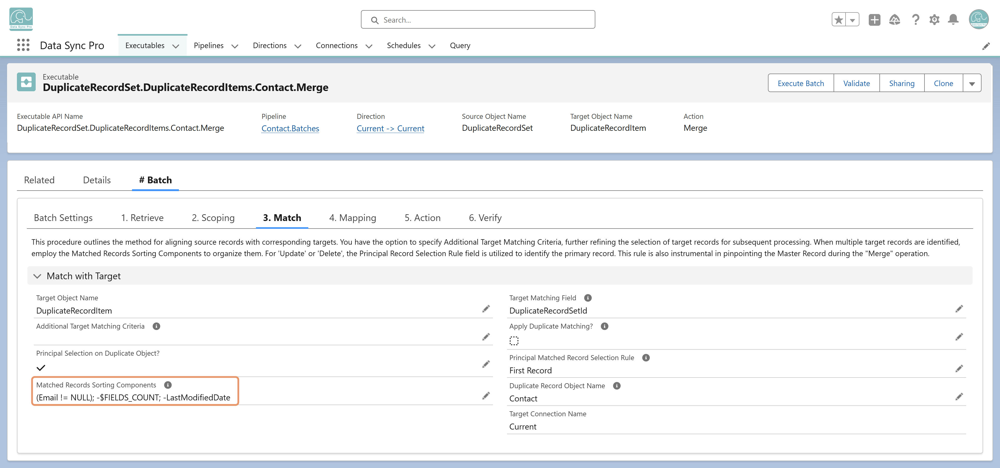

<div>
  <div>
    <p>
      The <strong>Matched Records Sorting Components</strong> field controls how
      DSP orders matched target records when multiple matches exist. It accepts
      semicolon-separated expressions, evaluated in ascending order by default.
    </p>
    <p><strong>Example:</strong></p>
    <pre><div><div><code>IsPrimary__c; -$FIELDS_COUNT; -LastModifiedDate  
</code></div></div></pre>
    <p>
      This sorts records first by the number of populated fields
      (DESC), and if equal, by
      LastModifiedDate (DESC). Prefixing an expression with a
      minus sign (<code>-</code>) indicates descending order.
    </p>

    

  </div>
</div>
